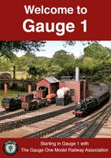
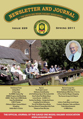

.svg "Select English site")
.svg "Select German site")
.svg "Select French site")
{kind=link}
{kind=link}
{kind=link}
Welcome to the Gauge One Model Railway Association
Gauge 1 model railways run on tracks where the rails are 45mm or 1¾ inches apart. For standard gauge, this corresponds to a scale of 1:32 or around 10mm to the foot.
We run models powered by on-board batteries, by track-supplied current and by live steam with boilers fired by alcohol, gas or coal. Even clockwork engines still make occasional appearances.
The size of Gauge 1 models allows for exquisite levels of detail in fine-scale models, and the availability of robust, simplified models also makes it an ideal scale for youngsters. You can read about the breadth of activity within G1MRA by downloading these copies of our welcome brochure and our quarterly magazine.


There are around 2,000 G1MRA members spread across 23 countries. Around two thirds of the membership are UK based with the remainder mostly in Europe and North America.
We are a very sociable bunch. Much of our activity centres on running sessions held in members' gardens where you will meet both newcomers and experienced hands: an enthusiastic and knowledgeable community which shares expertise ranging from 130 year old clockwork design and live steam through to the most modern 3D printing and computer-based control techniques.
Quick links
{kind=link}
Headline events
7 November 2026
G1MRA Autumn show and AGMBritish Motor Museum, Gaydon CV35 0BJ Open to public 10.00-16.00, £10.00 entry for public; £8.00 entry for G1MRA members.
eventsmanagement@g1mra.com
Running track plus trade support
Diary
8 August 2026
2026 Tom Barratt Memorial Day (Members only)east-anglia-group@g1mra.com
National GTG for G1MRA members: all locomotives welcome but especially those built by Tom Barratt. Tea and coffee provided but bring own lunch.
11 October 2026
Midland Group running day (Members only)Penkridge Peace Memorial Hall ST19 5AP
midland-group@g1mra.com
Thompson Halt track 09:00-16.00; £5 entry + £5 runners; bacon or sausage baps 11.30-13.00; tea and coffee all day
15-18 October 2025
Midlands Model Enginering ExhibitionWarwickshire Event Centre CV31 1FE
Static locomotive display by the Midland Group
3D Circle display
17 October 2026
Yorkshire Group running dayDrax Power Station Social Club YO8 8PJ
yorkshire-group@g1mra.com
Ridings track 09:00-15.00; bar meals available
24 October 2026
Exeter Garden Railway ShowThe Matford Centre Matford Park Road Marsh Barton Ind Estate Exeter EX2 8FD
7 November 2026
G1MRA Autumn show and AGMBritish Motor Museum, Gaydon CV35 0BJ Open to public 10.00-16.00, £10.00 entry for public; £8.00 entry for G1MRA members.
eventsmanagement@g1mra.com
Running track plus trade support